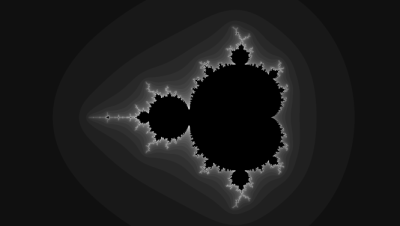
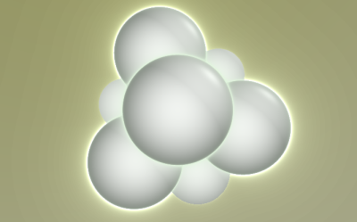

Usage
All Fragmentarium programs are written in GLSL. A Fragmentarium 'fragment' is always executed for each pixel in the image - there is no OpenGL geometry in the images. So Fragmentarium programs are typically raycasters or raytracers.
One main feature of Fragmentarium is the ability to break up code in smaller fragments and reuse them. Another core feature is the ability to bind custom user interface elements (such as sliders) to variables in the script.
For a quick start, take a look at the examples at the bottom.
New preprocessor commands
Fragmentarium adds a few additional preprocessor commands.
Magical Uniforms
A few special variables can just be declared, and are assigned values automatically by Fragmentarium.
GUI Elements
It is possible to map GUI elements (such as sliders) to variables in the GLSL shaders. Notice that if a comment (//) precedes the definition, the comment will appear as a tooltip in the UI.
The following GUI mappings are available:
- uniform bool b; checkbox[true]
- Maps a checkbox in the GUI to the boolean variable 'b' in the shader code. The default value is specified in the bracket.
- uniform int i; slider[0,1,2]
- Creates a slider for an integer named 'i'. The values in the brackets are minimum, default, and maximum values.
- uniform float f; slider[0.1,1.1,2.3]
- Creates a slider for an single precision floating-point number named 'f'. The values in the brackets are minimum, default, and maximum values.
- uniform vec3 v; slider[(0,0,0),(1,1,1),(1,1,1)]]
- Creates three slider for the 3D vector named 'v'. The values in the brackets are minimum, default, and maximum vector values.
- uniform vec3 color; color[0.0,0.0,0.0]
- Creates a color-chooser for the 3D vector named 'color'. The values in the brackets are R,G, and B values (in the interval [0;1]).
- uniform sampler2D tex; file[tex.jpg]
- Loads a texture into the sampler named 'text'. Filenames are resolved the same way as for the '#include' command (using the 'include' paths).
Implementing a Simple 2D System
#include "2D.frag"
#group Simple Mandelbrot
// Number of iterations
uniform int Iterations; slider[10,100,1000]
void init() {}
vec3 getColor2D(vec2 c) {
vec2 z = vec2(0.0);
for (int i = 0; i < Iterations; i++) {
z = vec2(z.x*z.x-z.y*z.y,2*z.x*z.y) + c;
if (dot(z,z)> 100.0) {
return vec3(float(i)/float(Iterations));
}
}
return vec3(0.0);
}
The example above demonstrates a very simple system: a monochrome Mandelbrot set.
The first line includes the "2D.frag" which is a very simple fragment - its only task is to take care of anti-alias. Using "2D.frag" simply requires that the user implements a function 'getColor2D', which gets the 2D model position as input, and must return a RGB color in a three component vector.
The "void init() {}" line does nothing. It can be used to run initialization code, but is not needed here. Since the 'main' function in "2D.frag" expect this function to be defined, it is necessary to provide it, even though it is empty.
Also notice the 'uniform int Iterations' line. This line creates a slider in the Fragmentarium UI, and binds it to the 'Iterations' variable in the GLSL script. The comment line above this line will appear as a tooltip in UI as well.
Implementing a Distance Estimated System
The second example shows how to implement a Distance Estimated system. Distance Estimated systems belongs to a special class of systems, defined by a function which is able to calculate an upper bound to the distance to the closest part of the object. Many interesting fractals can be expressed by a distance estimator. In the example below, the distance estimator represents a system of eight spheres located at the corners of a cube.
#include "DE-Raytracer.frag"
void init() {}
float DE(vec3 pos) {
return abs(length(abs(pos)+vec3(-1.0))-1.2);
}
The first line includes the "DE-Raytracer.frag". In contrast to the 2D example, "DE-Raytracer.frag" takes care of a lot of stuff, including lighting and anti-aliasing. It is, however, very simple to use: simply provide a distance estimator in the function 'DE' which takes a point in space as input and returns the distance (or an upper bound of it) to the closest point on the object.